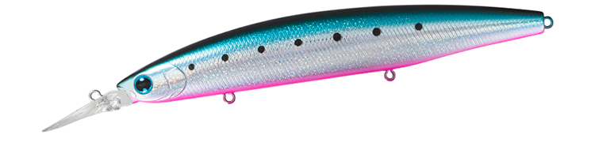
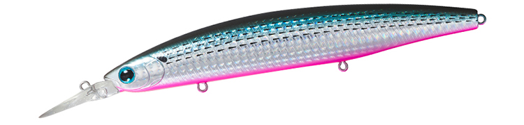
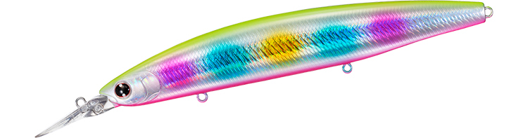
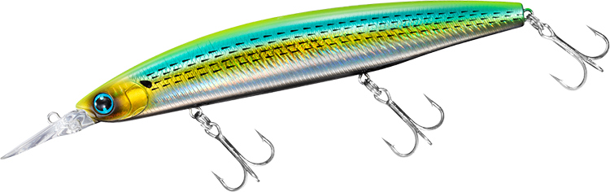

セットアッパー145S-DR
（シンキングダイバー）
セットアッパー145S-DR（ショアラインシャイナーZ セットアッパー145S-DR）はDAIWA（ダイワ）のシンキングダイバーです。
小沼正弥完全監修のセットアッパーS-DRシリーズで、シリーズ最大の145mm・39gモデル。当社テストで平均88.5mの飛距離と最大2mオーバーの潜行深度を持ち、大型ベイトに付く魚や遠くの中層を攻められるのが最大の魅力です。

画像出典:DAIWA公式HP
スペック
- メーカー
- DAIWA（ダイワ）
- タイプ
- シンキングダイバー（スローシンキング）
- 全長
- 145mm
- 自重
- 39g
- 潜行深度
- 最大2mオーバー
- フック
- #3トレブル
- リング
- #4
- 飛距離
- Max92.0m／Ave88.5m（当社テスト）
- アクション
- ハイピッチタイトウォブンロール
- ターゲット
- シーバス・青物・サワラ
- 価格
- 2,550円（税抜）
▼今すぐチェック
セットアッパー145S-DRの特徴
シリーズ最大の飛距離とボリュームで、遠くの中層と大型ベイトパターンを攻めるセットアッパー
-
シリーズ最大の飛距離（Ave88.5m）
「サイレントウエイトオシレートシステム」とHGS、ボディに隠れるエアロリップの組み合わせで、ロングリップミノーとは思えない飛距離を実現。145S-DRは当社テストで平均88.5mとシリーズ最大だ。
-
あえてルーズなHGSで「食わせの間」
ウエイト保持機構HGS（PAT.）をあえてルーズに設定し、流れや速度の変化で自動的にウエイトが外れてバランスを崩す。このランダムな動きが食わせの間になる。
-
ラトルINカラーで強いアピール
ラトリンカラーは目玉の近くにラトルを内蔵し、ブラスとガラスをブレンドした高音サウンドで存在感をアップ。マヅメ時や濁り潮、ナイトゲーム、オープンエリアの第一投に向く。
セットアッパー145S-DRの使い方
基本はただ巻きのみでOK。スローリトリーブでハイピッチタイトウォブンロール、スピードを上げるとワイドウォブンロールに変化し、時折自動で横へのスライド（チドリアクション）が混じる。
着水後のカウントとリトリーブスピードで、最大2mオーバーまでのレンジを探る。引き波の力を利用して堤防や磯際の中層にとどまらせたまま泳がせ続けるテクニックも効果的です。
セットアッパー145S-DRの得意な状況
足場の高い堤防や磯から、遠くの中層にいるシーバスや青物、サワラを狙う状況が最大の出番。
コノシロなど大型ベイトが入っている時に、ボリュームのあるシルエットと飛距離で広く探りたい場面で選びたい1本です。
ワンポイント
145S-DRはシリーズで唯一#3トレブル・#4リングを標準装備しています。大型の青物を想定する時も、フックの状態はこまめに確認しましょう。
ベイトが小さい時やもう少し軽く扱いたい時は、125S-DR（26g）に持ち替えると使い分けがしやすくなります。
セットアッパーS-DRシリーズの使い分け
| モデル | 全長／自重 | 得意な場面 |
|---|---|---|
| 75S-DR | 75mm／13g | 小型ベイト・最大1.5mオーバー・MAGLOCK搭載 |
| 97S-DR | 97mm／18g | コンパクトなベーシックサイズ・最大1.5mオーバー |
| 110S-DR | 110mm／22.6g | 125のダウンサイジング・スレた状況やサーフのヒラメに |
| 125S-DR | 125mm／26g | シリーズの中核・最大2mオーバー・Ave77.0m |
| 145S-DR | 145mm／39g | シリーズ最大・Ave88.5mの遠投と大型ベイトに（本記事のモデル） |
セットアッパーS-DRは75S-DR〜145S-DRの5サイズ展開。ベイトサイズと必要な飛距離・レンジでサイズを選び、145S-DRは遠投と大型ベイト対応を担う最大サイズだ。
オススメカラー
セットアッパー145S-DRは豊富なカラーを展開。オススメのカラーを厳選して紹介します。

ラトリン青物イワシラトル入りの青物向けイワシカラー。ナブラ打ちやオープンエリアの第一投に。

ラトリンコノシロピンクベリーコノシロパターンにピンクベリーとラトルのアピールをプラス。

アデル不夜城常夜灯周りのナイトゲームで定番の不夜城。夜の港湾部に。

ラトリンアデルライムコノシロライムで視認性を高めたコノシロカラー。濁りやローライト時に。
画像出典:DAIWA公式HP
セットアッパー145S-DRに似ているルアー
-
 セットアッパー125S-DR
ダイワ
詳細はこちら＞
セットアッパー125S-DR
ダイワ
詳細はこちら＞
同じセットアッパーS-DRシリーズの125mmモデル。ベイトが小さい時や軽く扱いたい時は125S-DR、遠投や大型ベイトの時は145S-DRと使い分けられる。
-
 レアリス ジャークベイトSWリミテッド160S
DUO
詳細はこちら＞
レアリス ジャークベイトSWリミテッド160S
DUO
詳細はこちら＞
DUOの160mmジャークベイト。大型サワラや青物を狙う同じサイズ帯で、ただ巻きならセットアッパー、ジャークならレアリスと選べる。
-
 タイドミノースリム178F
DUO
詳細はこちら＞
タイドミノースリム178F
DUO
詳細はこちら＞
178mmのロングミノー。大きめのベイトを意識した魚を遠投で狙う考え方が、セットアッパー145S-DRと共通する。